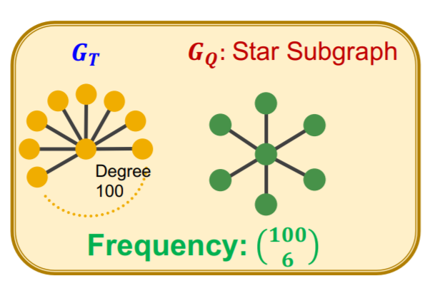
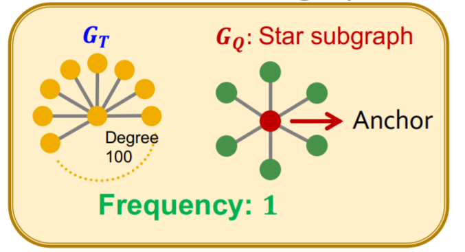
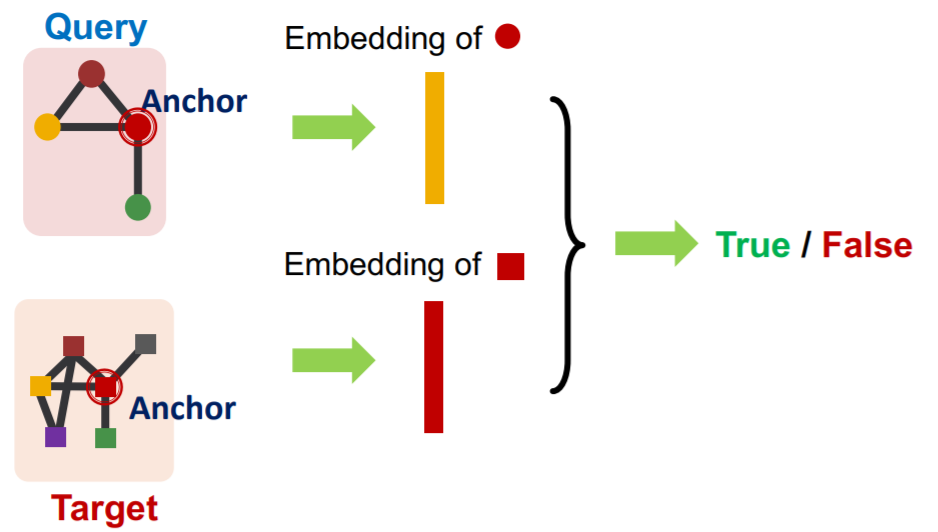
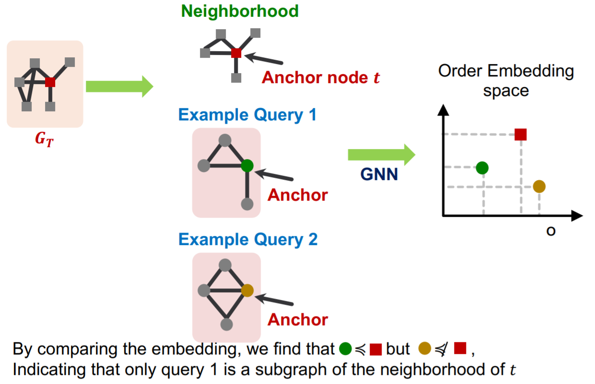
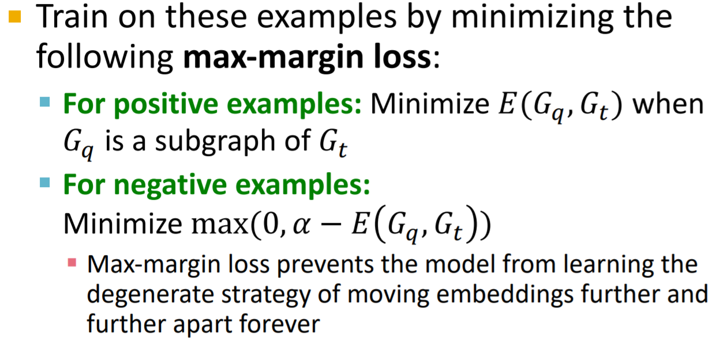
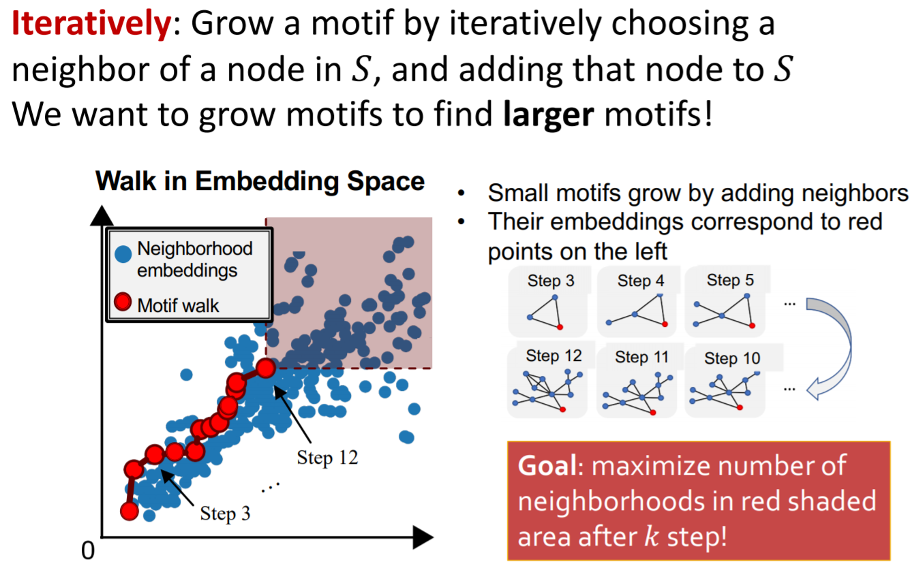
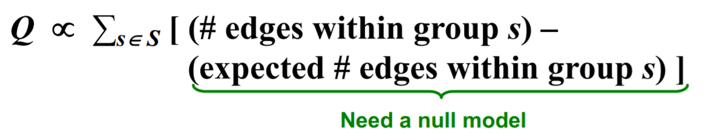
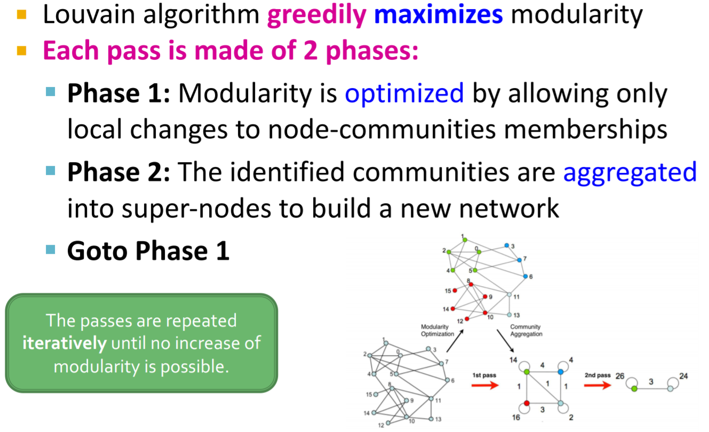

本节课将介绍子图匹配与群体检测问题。
本文主要参考资料为CS224W的Lecture 12 & 13，课程视频可在Youtube观看。
Subgraph Mining
Subgraphs and Motifs
子图可以用基于节点(或基于边)的方式来定义，即包含一个节点集合及其节点间的边的(或包含一个边集合及其涉及到的节点的)子图。在实际中可结合具体问题选择定义方式，如在化学中通常使用基于节点的定义方式，而在知识图谱中通常使用基于边的定义方式。
Motif是指图中反复出现的、重要的相互连接模式。因此定义motif需要三部分：连接模式(子图)、出现频率、重要性。
子图出现的频次也有两种定义方式：基于图的与基于节点的。用$G_Q$表示子图，$G_T$表示目标图数据集。
基于图的频次定义为$G_T$中与$G_Q$同构的由$G_T$的节点子集定义的子图的个数。

基于节点的频次定义为$G_T$中与$G_Q$同构的且有一组对应节点的由$G_T$的节点子集定义的子图的个数。

Motif的重要性:对于在真实网络中出现的频次比随机的网络中出现的频次高的子图，我们认为其更重要。随机的网络应该与原图有类似的统计特征，如相同数量的节点和边、节点对应同样的度等。我们用Z-score来衡量motif的重要性:
其中$N_{i}^{\text {real }}$是motif $i$在真实图中出现的频次，$\bar{N}_{i}^{\text {rand }}$是motif $i$在随机图中出现的平均频次。Z-score越高表明对应motif的重要性越高。标准化后的Z-score称为significance profile (SP):
我们可以定义一个网络significance profile特征向量，每一维表示一个motif的SP。
Motif还可以扩展到有向图动态图等，也可以采用频次和重要性的定义，以及考虑under-representation等。
Neural Subgraph Matching
判断一个query graph是否是目标图的子图的问题被称作子图匹配问题。用机器学习的方法来解决子图匹配问题，可以通过学习表征图结构的embedding来实现，在这部分我们考虑基于节点定义的子图

通过这样的方法，我们不仅能学习到query graph是否是目标图的子图，并且还能得到对应的节点对。
这里我们采用order embedding space，如在二维空间中，只有右上与左下的节点才存在包含关系。

损失函数可采用max-margin loss

基于此方法，还可寻找包含特定数量节点的频次最高的motif

Community Detection
对于群体检测，我们首先介绍一个用来评价分块性能的模块系数$Q$

这里的null model即随机生成的图，与上一部分类似。通过最大化模块系数$Q$，就能区分不同的群体。
针对该问题，可以采用Louvain Algorithm

对于群体间有交叉的情况，可以采用BigCLAM算法，这里就不做过多介绍了。